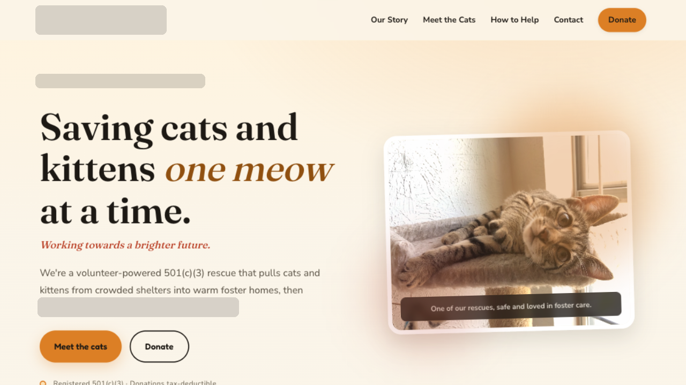

CASE 01
Charity website · Free build · Mobile-first adoption & foster funnel

A foster-based cat rescue
A warm, phone-first site for an all-volunteer foster cat network. Designed around the reality that 82% of their visitors arrive from Instagram or Facebook links on a phone and decide within ten seconds whether to apply to foster, browse cats, or donate.
#FBF8F3 (14.8:1)#1F1A17 (14.8:1)#9E3B24 (6.4:1)#254D38 (8.6:1)
HTML+CSS14.5 KB
LCP (4G)340 ms
Tap Target52×48px